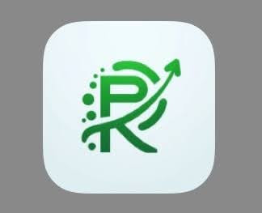
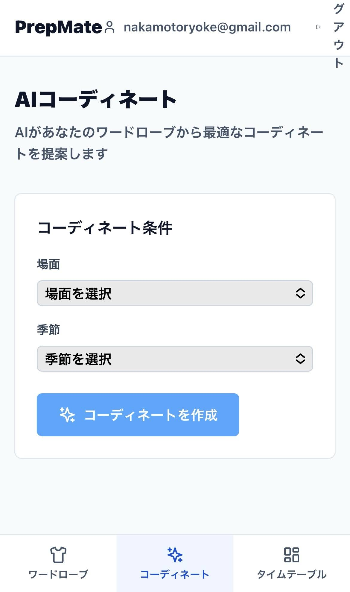

名前：中本怜祐
屋号：ナカモトリョウスケ
活動：STEAM教育や地域課題のソリューションづくりに奮闘しています。
所属：香川高専電子システム工学科
出身：岡山県
屋号：ナカモトリョウスケ
活動：STEAM教育や地域課題のソリューションづくりに奮闘しています。
所属：香川高専電子システム工学科
出身：岡山県
About Me
2010
岡山県岡山市に生まれる
2019
父がやっていた
プログラミング講座に通う
プログラミング講座に通う
2023
空手で全国出場
起業体験プログラムに参加して
自由研究ワークショップを開催
自由研究ワークショップを開催
過去問を共有するアプリ「らくぺん」を開発
2024
岡山の公民館で
プログラミング講座を開く
プログラミング講座を開く
2025
香川高専に入学
LINE YAHOO HACKU参加
朝の時間効率化アプリ「PrepMate」を開発
朝の時間効率化アプリ「PrepMate」を開発
現在
プログラミング教室を計画中
AKATSUKIプロジェクト
高専プログラミングコンテスト出場予定
AKATSUKIプロジェクト
高専プログラミングコンテスト出場予定
Works
-

らくべん過去問を共有する学習アプリ。学生同士で効率的な学びを実現。
-

PrepMate朝の準備を効率化するアプリ。LINE YAHOO HACKUで開発。
Contact
GitHub：ryorig